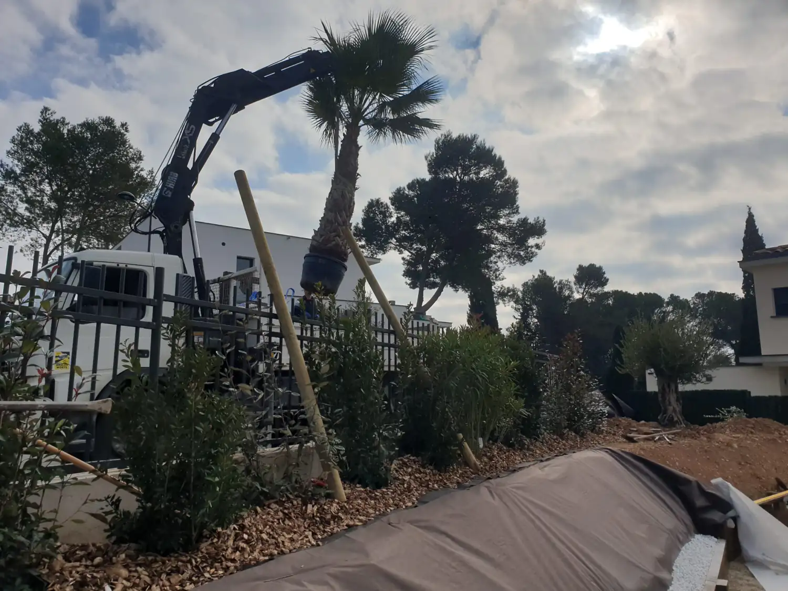
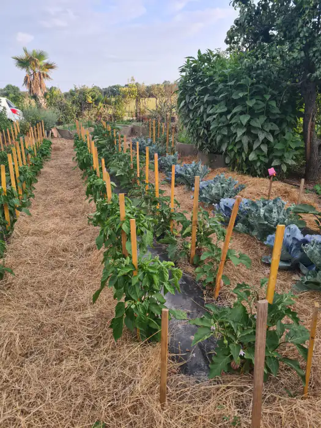

Aménagement minéral
Allées, cours, paillages minéraux, pas japonais en ardoise, béton désactivé, bordures acier.

AccueilPlantation & massifs
Saint-Cyr Services
Massifs méditerranéens, haies persistantes, potagers. Et le camion-grue quand l’arbre ne passe pas par le portail. Des plantes qui tiennent l’été d’ici.
Le principe
Deux mois sans pluie, et un sol qui sèche en profondeur. Les végétaux gourmands en eau tiennent une saison, puis grillent. Alors on prend des espèces habituées au sec. Et on les plante pour qu’elles aillent chercher l’eau en bas toutes seules.
Olivier, arbousier, laurier-tin, pittosporum, romarin, ciste, lavande, phlomis, teucrium, gaura, agapanthe, graminées. Une fois installées, elles se passent d’arrosage permanent. On compose selon l’exposition, la nature du sol, le vent et le temps que vous voulez y passer. Pour les haies persistantes : photinia, éléagnus, laurier-tin, pittosporum, cyprès pour un écran droit. On les mélange plutôt que de planter une seule espèce sur toute la longueur, ça évite de tout perdre si une maladie passe.
Le reste se joue dans le trou. Une fosse deux à trois fois plus large que la motte. Le fond décompacté, sinon la semelle lissée par la pelle arrête les racines. La terre en place amendée plutôt que remplacée, une cuvette pour retenir l’eau, un paillage épais. Et un tuteur tant que les racines ne tiennent pas le sujet.

Ce que ça comprend
Poser des pots dans un massif, ce n’est pas planter. Voilà le détail.
En images
Photos prises sur nos chantiers. Cliquez pour agrandir.
Questions fréquentes
L’automne, pour presque tout. Arbustes, haies, vivaces, arbres. Le sol est encore chaud, les pluies reviennent, et les racines travaillent tout l’hiver pendant que la plante dort. Les palmiers et les sujets frileux, eux, attendent le printemps et une terre réchauffée. En conteneur, on plante presque toute l’année hors gel et hors canicule — mais l’arrosage de la première saison est bien plus lourd.
Une fois installé, oui. Pas la première année. Tant que les racines n’ont pas quitté la motte, la plante ne boit que dans un volume gros comme un seau. On arrose espacé et copieux, pour que l’eau descende et que les racines la suivent. Arroser un peu tous les jours donne l’inverse : un chevelu en surface, et une plante qui grille au premier coup de chaud.
Au camion-grue. Le sujet descend droit dans sa fosse, à la verticale de la flèche, sans qu’on traîne la motte au sol. Ce qui se prépare avant, c’est l’accès : où le camion se pose, quelle portée il faut, ce qui passe au-dessus — câbles, branches, toiture, portail. On regarde ça à la visite, avant de commander quoi que ce soit. C’est l’accès qui décide de la taille du sujet qu’on peut planter chez vous.
Le tuteur ne soutient pas la plante, il l’empêche de bouger. Un sujet balancé par le vent casse ses jeunes racines en permanence et ne s’ancre jamais. On le retire dès qu’il a fait son temps : un tuteur oublié finit par étrangler le tronc. Le paillage garde la fraîcheur du sol, évite la croûte qui se forme après chaque arrosage et prive de lumière la plupart des mauvaises herbes. Sept ou huit centimètres, collet bien dégagé.
Les autres prestations
Un massif arrive rarement seul. Il y a le sol autour, et l’entretien après.
Allées, cours, paillages minéraux, pas japonais en ardoise, béton désactivé, bordures acier.

Haies au cordeau, oliviers en nuage, fruitiers, palmiers. La forme vient après la plantation.

Gazon naturel semé ou en plaques, gazon synthétique, préparation du sol et arrosage.

Plages de piscine, terrasses bois et carrelées, écrans de verdure autour du bassin.

Tonte, taille, débroussaillage, désherbage et évacuation des déchets verts, en passages réguliers.
Le déplacement et le devis ne coûtent rien. Un coup de fil suffit pour savoir si c’est faisable.